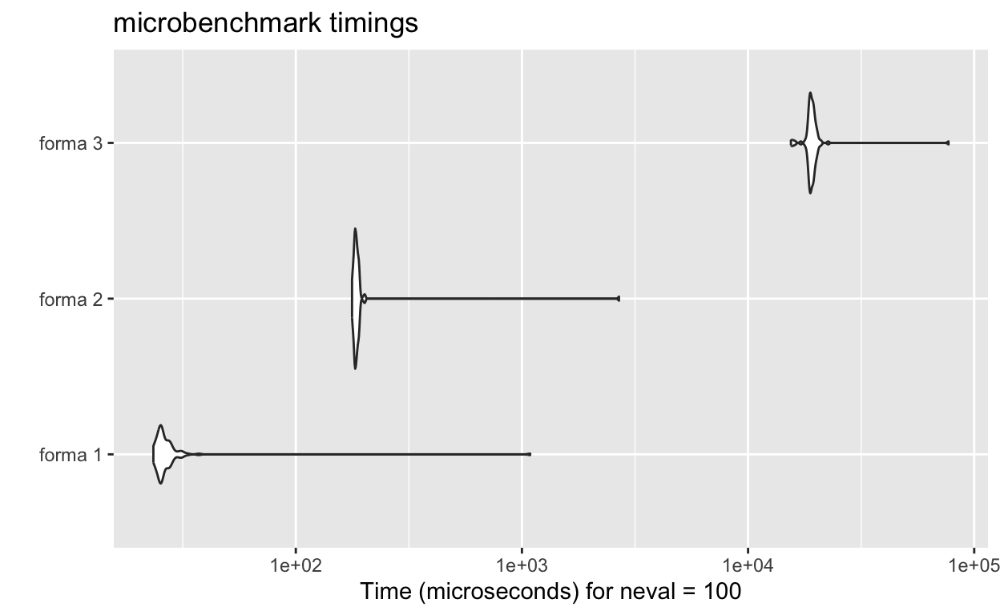

Introdução
É bem sabido por estatísticos, econometristas, cientistas e analistas de dados que, tanto R quanto Python não são linguagens particularmente rápidas. Assim, otimizar o desempenho dos códigos torna-se uma parte essencial da rotina de quem trabalha com estas linguagens. Neste post, focaremos na linguagem R e no uso de recursos para paralelização.
Outro caminho para otimizar o desempenho, além da já famosa vetorização, é através do C++, cuja integração com o
Rpode ser realizada utilizando o pacoteRcpp.
A computação paralela é uma técnica que divide um grande problema em pequenas tarefas, as quais são resolvidas de forma descentralizada podendo ser processadas em vários núcleos de um computador ou entre computadores, normalmente, sendo mais rápido do que processar as tarefas de forma sequencial (Flinders e Smalley 2024). A computação paralela é resposta a uma busca por maior velocidade de execução dos scripts, motivada pelo interesse em aumentar a eficiência do código em uma era em que modelos cada vez mais complexos são propostos na literatura.
Este post apresenta as algumas das principais formas de paralelizar funções no R, além de mostrar como identificar gargalos de processamento e testar alternativas para melhorar a eficiência do código.
Paralelização
Por padrão, o R utiliza apenas um núcleo do computador para processar suas tarefas. Paralelização permite a utilização de múltiplos núcleos, diminuindo assim o tempo de processamento.
A Figura 1 apresenta a ideia de como ocorre a paralelização de processos. Note que, ao utilzarmos processamento em paralelo, existe um tempo chamado de overhead que não estava presente no processamento sequencial. Overhead refere-se ao tempo necessário para coordenar e gerenciar tarefas tais como a comunicação entre os núcleos, divisão e agregação de tarefas, gerenciamento de memória, entre outros.
Figure 1: Conceito da paralelização
A forma apresentada de paralelização no post abordará 3 dos principais pacotes que utilizam o framework do pacote future, sendo eles os pacotes furrr, doFuture e future.apply. É importante mencionar que, além dos pacotes aqui apresentados, existem outros que também podem ser utilizados.
O pacote future
 O pacote
O pacote future, parte do ecossistema futureverse, é um framework que unifica e simplifica a paralelização no R. Para isso, ele apresenta uma abstração do conceito de atribuição, permitindo o cálculo de valores de forma assíncrona (futura) e resolvidos via futures. Existem 4 planos para resolver um future:
sequential: resolve futures sequencialmente na sessão em utilização doR, sendo a forma padrão de funcionamento doR;multisession: resolve futures de forma assíncrona e paralelizada gerando, em segundo plano, novas sessões independentes doRque se comunicam com o processo principal;multicore: resolve futures de forma assíncrona e paralelizada gerando forked R processes que rodam em segundo plano. Não suportado em sistemas Windows;cluster: resolve futures de forma assíncrona e paralelizada em sessões independentes doR, normalmente utilizado para duas ou mais máquinas.
Ademais, além de selecionar o plano, também é necessário escolher a quantidade de núcleos (workers) a serem utilizados, configurações definidas por meio da função plan().
Por exemplo, o comando
plan(multisession, workers = 3)configura o plano comomultisessione define a utilização de 3 workers.
Além da função plan(), as seguintes funções são bastante úteis quando o interesse é paralelizar
plan(): define a estratégia a ser utilizada, além de, ao ser utilizada sem argumentos, retorna a estratégia atual;availableCores(): retorna a quantidade de núcleos que a máquina tem;nbrOfWorkers(): retorna a quantidade de workers definidos no comandoplan();nbrOfFreeWorkers(): retorna a quantidade de workers disponíveis, isto é, os que não estão executando nenhuma tarefa.
Por exemplo, a seguir são apresentadas as configurações sem alteração do número de workers, de um dos autores no momento de escrever este post:
plan()sequential:
- args: function (..., envir = parent.frame(), workers = "<NULL>")
- tweaked: FALSE
- call: NULLsystem
12 [1] 1[1] 1O Pacote furrr
 O pacote
O pacote furrr busca combinar os comandos e ferramentas de programação funcional do pacote purrr com o processamento em paralelo do future. Essa integração possibilita a execução paralela de funções de mapeamento com poucas alterações no código, sendo necessário acrescentar o prefixo future_ às funções do purrr. Por exemplo, a versão paralela da função map() é a future_map(), a versão paralela da função imap() é a future_imap(), e assim por diante.
A seguir, apresentamos um exemplo para ilustrar como utilizar a função future_map_dbl() para aplicar a função log() nos elementos de um vetor utilizando 2 workers:
library(furrr)
plan(multisession, workers = 2) # paralelizar utilizando 2 núcleos
vet <- c(2, exp(1), 10, 20) # vetor para teste
future_map_dbl(vet, log)[1] 0.6931472 1.0000000 2.3025851 2.9957323Na prática, é comum o uso de funções mais complexas, as quais poderão ser incluidas através de duas formas: (a) por meio de funções anônimas, criadas a partir de function(x) {...} (ou \(x) {...}, para versões superiores ao R 4.1.0) e (b) por medio de uma forma exclusiva do furrr. Para ilustrar isto, veja o exemplo a seguir:
# forma 1
f1 <- future_map(vet, \(i) {
c('log' = log(i), 'quadrado' = i^2)
})
# forma 2 (exclusiva do furrr)
f2 <- future_map(vet, ~ c('log' = log(.x), 'quadrado' = .x^2))
# resultado
identical(f1, f2) # TRUE[1] TRUEf1 [[1]]
log quadrado
0.6931472 4.0000000
[[2]]
log quadrado
1.000000 7.389056
[[3]]
log quadrado
2.302585 100.000000
[[4]]
log quadrado
2.995732 400.000000 O Pacote doFuture
O pacote doFuture é outra alternativa para realizar a paralelização de processos. Ele pode ser utilizado de duas formas: a primeira, mais recomendada, é através do operador %dofuture%, enquanto a segunda, menos recomendada, é através do operador %dopar%.
A seguir, será utilizado o pacote doFuture para aplicar a função \(log()\) nos elementos de um vetor utilizando 2 núcleos e retornar um vetor como saída.
library(doFuture)
plan(multisession, workers = 2) # paralelizar utilizando 2 núcleos
vet <- c(2, exp(1), 10, 20) # vetor para teste
foreach(i = vet, .combine = c) %dofuture% {
log(i)
}[1] 0.6931472 1.0000000 2.3025851 2.9957323Vale ressaltar que a saída padrão do foreach() é em formato de lista. Contudo, é possível configurá-la por meio do argumento .combine, que neste caso foi ajustada para ter um vetor como resultado. Além disso, destaca-se que o foreach() NÃO é um um for-loop, para mais detalhes, veja (Bengtsson 2022, Apêndice 8.8).
O Pacote future.apply
O pacote future.apply estende as funções da base do R que aplicam operações à vetores, matrizes e listas, permitindo a execução de forma paralela com o suporte do framework do future. Este pacote fornece versões paralelizáveis de funções da família apply() presente na base do R, bastando adicionar o prefixo future_.
A seguir, está apresentado como utilizar o pacote future.apply para aplicar a função \(log()\) nos elementos de um vetor utilizando 2 núcleos:
library(future.apply)
plan(multisession, workers = 2) # paralelizar utilizando 2 núcleos
vet <- c(2, exp(1), 10, 20) # vetor para teste
future_sapply(vet, log)[1] 0.6931472 1.0000000 2.3025851 2.9957323Além do future_sapply(), temos também o future_apply() e o future_lapply().
Exemplos Adicionais
Nesta section dois exemplos adicionais serão abordados, o primeiro, relativo à comparação do tempo de execução com e sem paralelização considerando os pacotes apresentados, enquanto o segundo discutirá brevemente a geração de números aleatórios e cuidados necessários ao utilizar em conjunto com a computação paralela.
Exemplo 1: slow_sqrt
Será aplicado a função slow_sqrt(), a qual espera 1 segundo e calcula a raiz quadrada do valor de entrada. Além disso, será apresentado o tempo de execução para aplicar essa função em cada elemento de um vetor de tamanho 60 com e sem paralelização.
Primeiro será feito o setup necessário:
A seguir, a comparação utilizando processamento sequencual e as versões em paralelo
microbenchmark(M1 = lapply(vet, slow_sqrt),
M2 = future_map(vet, slow_sqrt),
M3 = foreach(i = vet) %dofuture% {
slow_sqrt(i)
},
M4 = future_lapply(vet, slow_sqrt), times = 10)Unit: seconds
expr min lq mean median uq max neval
M1 59.25603 59.26126 59.31608 59.26598 59.40455 59.48470 10
M2 12.01358 12.01692 12.15005 12.02559 12.05385 13.23094 10
M3 12.00944 12.02402 12.03647 12.02777 12.06402 12.06695 10
M4 12.00339 12.01313 12.02976 12.01728 12.05871 12.06682 10Exemplo 2: Números Aleatórios
Considere as variáveis aleatórias \(X_1 \sim \mathcal{N}(0,1)\), \(X_2 \sim \mathcal{N}(10, 5)\) e \(X_3 \sim \mathcal{N}(50, 8)\). Deverá ser gerado uma amostra com 1000 observações para cada variável aleatória apresentada e calculado o mínimo, média, variância e máximo utilizando \(4\) núcleos considerando a seed 123.
Primeiro será feito o setup necessário:
plan(multisession, workers = 4) # paralelizar utilizando 4 núcleos
# execução sem paralelização
mu <- c(0, 10, 50)
sigma <- c(1, 5, 8)
set.seed(123)
lapply(1:3, \(i) {
amostra <- rnorm(1000, mu[i], sigma[i]) # gerando amostra
c('min'=min(amostra), 'media'=mean(amostra), 'var'=var(amostra), 'max'=max(amostra))
})[[1]]
min media var max
-2.80977468 0.01612787 0.98345893 3.24103993
[[2]]
min media var max
-5.239304 10.212326 25.486049 26.951854
[[3]]
min media var max
27.21163 49.83910 61.25973 77.36876 furrr
# forma 1
set.seed(123)
f1 <- future_map(1:3, \(i) {
amostra <- rnorm(1000, mu[i], sigma[i]) # gerando amostra
c('min'=min(amostra), 'media'=mean(amostra), 'var'=var(amostra), 'max'=max(amostra))
}, .options = furrr_options(seed = TRUE))
# forma 2 (exclusiva do furrr)
set.seed(123)
f2 <- future_map(1:3, ~ {
amostra <- rnorm(1000, mu[.x], sigma[.x]) # gerando amostra
c('min'=min(amostra), 'media'=mean(amostra), 'var'=var(amostra), 'max'=max(amostra))
}, .options = furrr_options(seed = TRUE))
# resultado
identical(f1, f2)[1] TRUEf1[[1]]
min media var max
-3.06732143 -0.01880173 1.10208379 3.40602221
[[2]]
min media var max
-4.215841 10.052563 25.919922 26.973502
[[3]]
min media var max
26.47221 50.12970 62.78559 73.13110 doFuture
set.seed(123)
foreach(i = 1:3, .options.future = list(seed = TRUE)) %dofuture% {
amostra <- rnorm(1000, mu[i], sigma[i]) # gerando amostra
c('min'=min(amostra), 'media'=mean(amostra), 'var'=var(amostra), 'max'=max(amostra))
}[[1]]
min media var max
-3.06732143 -0.01880173 1.10208379 3.40602221
[[2]]
min media var max
-4.215841 10.052563 25.919922 26.973502
[[3]]
min media var max
26.47221 50.12970 62.78559 73.13110 future.apply
set.seed(123)
future_lapply(1:3, \(i) {
amostra <- rnorm(1000, mu[i], sigma[i]) # gerando amostra
c('min'=min(amostra), 'media'=mean(amostra), 'var'=var(amostra), 'max'=max(amostra))
}, future.seed = TRUE)[[1]]
min media var max
-3.06732143 -0.01880173 1.10208379 3.40602221
[[2]]
min media var max
-4.215841 10.052563 25.919922 26.973502
[[3]]
min media var max
26.47221 50.12970 62.78559 73.13110 Veja que o resultado utilizando a paralelização diverge do que foi encontrado ao não utilizá-la. Além disso, note que há um argumento referende à seed em cada função dos pacotes apresentados, por exemplo, para o pacote furrr é utilizado o argumento .options = furrr_options(seed = TRUE). Estes argumentos são responsáveis por manter a reprodutibilidade na geração de números pseudo-aleatórios através do gerador L’Ecuyer-CMRG (utilizado pelo future), já que o Mersenne-Twister (gerador padrão do R) não foi idealizado para trabalhar com paralelização, podendo gerar números correlacionados entre os workers, causando viés e conclusões equivocadas.
Assim, como os geradores são diferentes, o resultado não é o mesmo, contudo, ambos são válidos, isto é, todos são amostras das respectivas normais apresentadas.
Eficiência de Código
A busca por soluções que diminuem o tempo de processamento computacional (como a computação paralela) vem acompanhadas da preocupação com a sua eficiência. Isto, pois ao se escrever um código mais eficiente, o tempo de execução tende a diminuir. No entanto, nem sempre vale a pena investir tempo na otimização prematura do código. Antes disso, é fundamental avaliar cuidadosamente se esse esforço é realmente necessário (Baldauf 2023):
- Quanto tempo é salvo pela otimização?
- Qual a frequência que este código é executado?
- Quanto tempo será necessários para otimizar o código?
Aassumindo que é necessária a otimização no código, torna-se importante detectar quais as linhas que mais consomem tempo. Para isso, ferramentas bastantes úteis são os pacotes profvis para detecção do gargalo no processamento e microbenchmark para testar tempo de processamento de diversas alternativas, como realizado no exemplo 1.
Importante: algumas boas práticas que podem ajudar a reduzir o tempo de processamento (Baldauf 2023):
- Quando necessário, armazenar resultados intermediários constatemente utilizados para evitar o recálculo;
- Preferir vetorizar o código e substituir for-loops por funções vetorizadas;
- Não paralelizar processos muito simples devido ao overhead;
- Evitar manipular objetos grandes na paralelização.
Profiler
Para identificar as partes críticas do código, isto é, o gargalo do processamento pode-se utilizar o pacote profvis, o qual examina o tempo gasto em cada função de determinada parte do script. Seu acesso se dá por Profile > Start Profiling (e Profile > Stop Profiling para finalizar) na barra de ferramentas do Rstudio ou através da função profvis().
Veja um exemplo abaixo (adaptado de Wickham et al. (2024)):
Sua análise está dividida em duas abas, a primeira, flame graph, é apresentado o tempo e memória gastos em cada linha de código em conjunto com uma timeline das funções utilizadas e, a segunda, Data, apresenta o tempo gasto em cada função.
Benchmark
Por último, o mesmo código pode ser escrito de várias formas diferentes, sendo necessário determinar qual delas é a mais rápida. Para isso existe o pacote microbenchmark, o qual auxilia na comparação entre as versões do mesmo código de forma sistematizada.
Considere comparar 3 funções diferentes cujo objetivo é calcular a soma de um vetor aplicando o logarítimo em cada elemento. A primeira, utiliza funções vetorizadas, a segunda e a terceira aplicam os comandos elemento à elemento, contudo, uma já aloca a memória necessária criando o vetor x_log do seu tamanho final, o que é mais eficiente.
library(microbenchmark)
# funções
f1 <- function(x) { # utilizando funções vetorizadas
x_log <- log(x)
sum(x_log)
}
f2 <- function(x) { # criando vetor do tamanho final (pré-alocando memória)
x_log <- vector(mode = 'numeric', length = length(x)) # tamanho final
for (i in 1:length(x)) {
x_log[i] <- log(x[i])
}
sum(x_log)
}
f3 <- function(x) { # utilizando o comando append() (ineficiente)
x_log <- vector(mode = 'numeric', length = 0) # tamanho 0
for (i in x) {
x_log <- append(x_log, log(i))
}
sum(x_log)
}
# vetor para teste
vet <- sample(1:10, size = 3500, replace = TRUE)
# benchmark
comp <- microbenchmark(
'forma 1' = f1(vet),
'forma 2' = f2(vet),
'forma 3' = f3(vet)
)
# resultado
comp Unit: microseconds
expr min lq mean median uq
forma 1 23.452 25.051 36.90041 25.6660 27.3265
forma 2 177.325 182.081 210.01061 184.3975 187.7800
forma 3 15469.874 18693.376 19634.10378 19021.0890 19515.1390
max neval
1087.443 100
2686.484 100
76993.982 100
Então, veja que a forma 1, isto é, a função f1(), é a mais eficiente (resultado esperado, afinal funções vetorizadas no R são mais eficientes que for-loops). Além disso, veja que a forma 2 se sobressai referente à forma 3, haja vista que o vetor para armazenar o resultado x_log já é criado com o seu tamanho final, enquanto que a forma 3 fica acrescentando ao final do vetor (na verdade o R faz uma cópia do objeto e faz o acréscimo do novo valor, logo, quanto maior for o objeto pior será o desempenho dessa proposta).
Comentários Finais
- Existe a alternativa de executar código como um background job. Para fazer isso no Rstudio basta buscar a aba de background job (Figura 2), selecionar o script e o diretório de trabalho e iniciar. Com isso, o script será executado em uma nova sessão, deixando o terminal disponível para utilização mesmo durante sua execução.
Figure 2: Background jobs no Rstudio
Uma estratégia interessante é escrever parte do código em C++ (através do pacote
Rcpp) e paralelizar com, por exemplo,future_apply()(que é uma das formas mais fáceis aqui apresentadas). Infelizmente, as tentativas previas realizadas por um dos autores não foram satisfatórias. Uma solução foi utilizar o funçãomclapply()do pacoteparallel.A maior parte deste post foi escrita pelo primeiro autor, João Victor Siqueira Rodrigues, a pedido do segundo autor. Este último realizou pequenas modificações no texto original e acrescentou pequenos comentários. O Segundo autor agradece a João Victor pela disponibilidade e colaboração na elaboração de um conteúdo que, certamente, será útil para seus colegas.
Happy Coding!